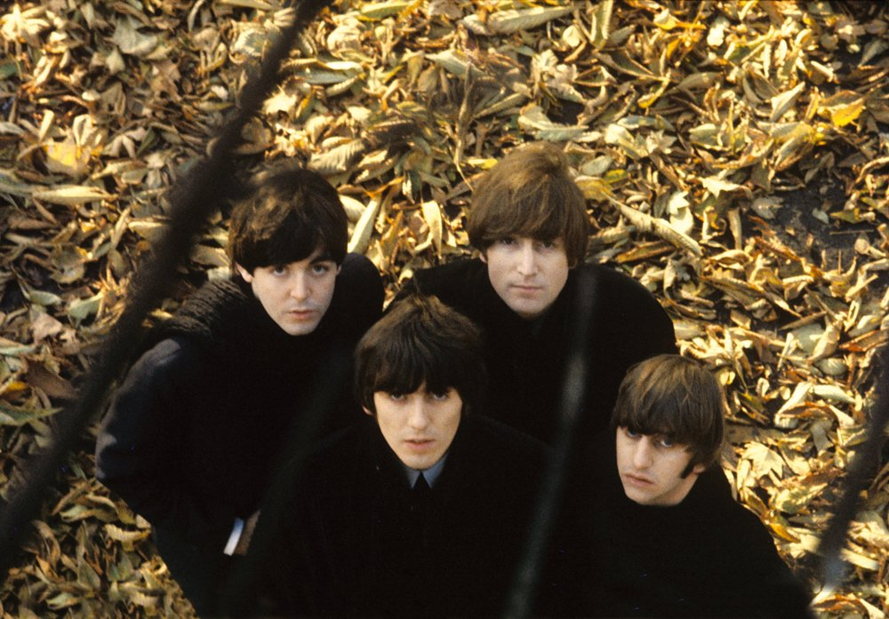
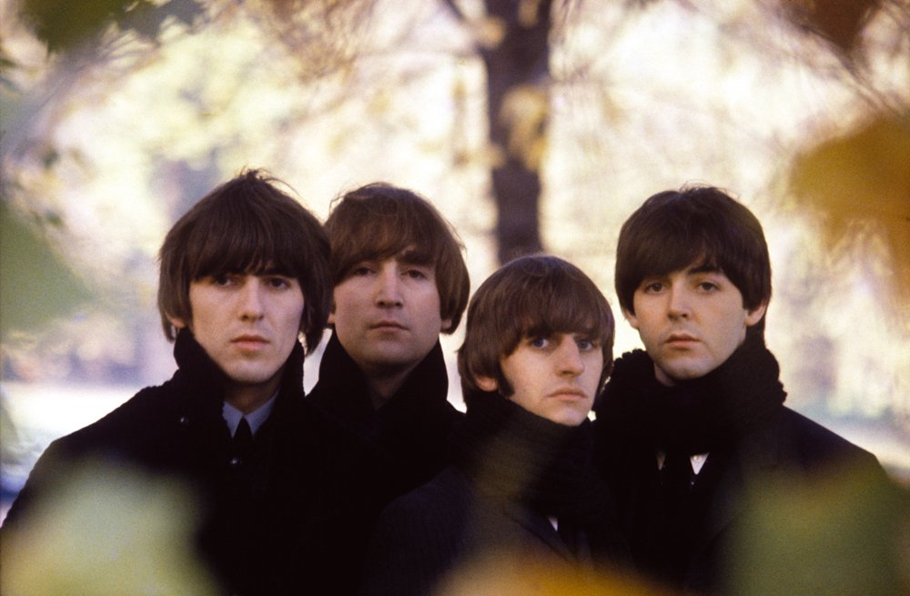

Beatles For Sale foi lançado em 4 de dezembro de 1964 - apenas 21 semanas após A Hard Day's Night. Foi o
quarto álbum lançado pelos Beatles em menos de dois anos.
O álbum havia sido gravado em sete dias, espalhados entre agosto e outubro, quando a agenda da banda estava
repleta de apresentações no Reino Unido, Canadá e EUA, além de trabalhos de rádio e televisão. Dada a falta
de tempo, não foi surpreendente que o grupo tenha voltado à fórmula de 1963 de oito músicas originais e seis
covers.

Nenhum single foi lançado no Reino Unido do Beatles For Sale - as faixas não-álbum "I Feel Fine" e "She's A
Woman" desempenharam esse papel - no entanto, esse acoplamento foi seguido nos EUA por "Eight Day's A Week"
(b / w "I Don't Want To Spoil The Party"), que se tornou seu 7º # 1 em março de 1965.
Os retratos da capa - novamente tirados por Robert Freeman - adornavam um pacote incomum com o bolso
(contendo o disco) revelado apenas quando a capa do álbum foi aberta. Havia um novo autor para as notas de
capa, também - Derek Taylor. Confira a natureza profética de suas anotações escritas no outono de 1964!
O álbum atingiu o primeiro lugar no Reino Unido e manteve essa posição por onze das 46 semanas que passou no
Top Twenty.

Mais uma vez, Beatles For Sale não surgiu como um álbum regular nos EUA até 1987. Em seu lugar estava
"Beatles '65", que contou com oito músicas do Beatles For Sale, além do lado A e B de "I Feel Fine" e "I'll
Be Back" do álbum britânico "A Hard Day's Night". Este álbum teve uma temporada de nove semanas no topo das
paradas dos EUA a partir de janeiro de 1965. As faixas restantes de Beatles For Sale apareceram em um
lançamento posterior da Capitol, "Beatles VI", lançado em junho de 1965. Isso também fez a posição # 1, que
ocupou por seis semanas.
"Apenas três semanas a partir de hoje, o novo álbum dos Beatles estará disponível em sua loja de discos
local - na verdade, será um caso de "Beatles For Sale" em 4 de dezembro. É algo contagiante, com o acento na
batida por toda parte.
Há 14 faixas, incluindo oito novas composições de Lennon-McCartney. Números de Chuck Berry, Carl Perkins,
Buddy Holly e da equipe Lieber-Stoller completam a composição. Essas faixas não-Beatles são incluídas para
um propósito, elas refletem os primeiros anos do grupo, porque eram principalmente números que levantaram
gritos no clube Cavern em Liverpool. Hoje em dia, os Beatles não têm muita chance de tocá-los. O LP está
transbordando de marcas Beatle absorventes e distintas."
Frases da Época
"Eu costumava ir à casa de john em weybridge para escrever músicas e naquele momento em particular eu tinha sido
preso por excesso de velocidade, então eu tinha que ter um motorista para me levar lá e estávamos conversando no
caminho e eu me lembro de dizer ao cara, bem como você estava, você sabe, você estava ocupado? E ele disse: 'ah,
sim, companheiro, eu tenho trabalhado oito dias por semana'. E eu entrei na casa de john e disse: 'certo, eu
tenho o título oito dias por semana' e nós o escrevemos lá e depois."
Paul
"O ensaio continuava no estúdio porque desde muito cedo muitas das músicas não estavam terminadas, as ideias
estavam lá para as músicas ou o primeiro verso ou um refrão, mas isso poderia ser mudado pelos escritores
enquanto estávamos fazendo isso."
Ringo
"Essa é uma cobertura bastante agradável. Robert Freeman - fotos agradáveis. Aparecemos no hyde park, perto do
albert memorial, e ele ficou bastante impressionado com o cabelo de george - um pequeno e maravilhoso nabo que
ele conseguiu criar."
Paul
"Naqueles dias, não lançávamos um single de um álbum, ou melhor, quando viemos para montar um álbum, não
incluímos o single nele. Eu acho que se eu tenho um favorito no álbum é a música de paul de i'll follow the
sun."
George Martin
"Musicalmente estávamos aprendendo muito. você sabe, foi aqui que aprendemos muito da música juntando - alguns
dos arranjos e coisas, você sabe. Fomos muito rápidos no estúdio quando você pensa sobre isso - duas músicas em
três horas."
paul.